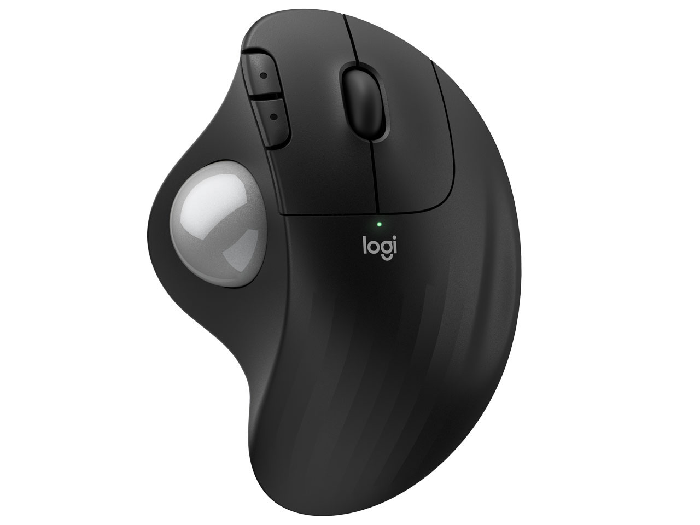
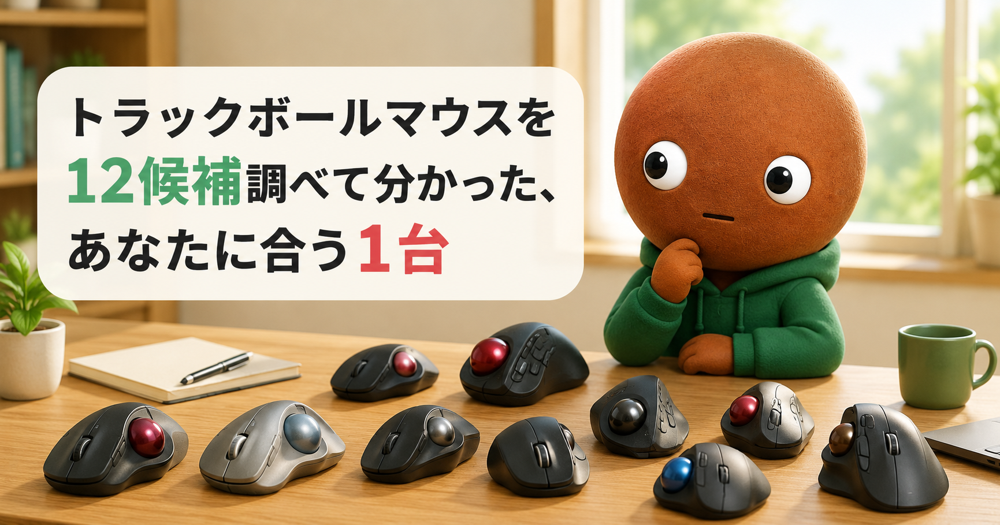
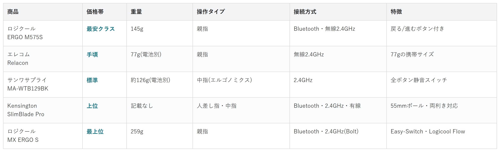

Amazonで見るパソコン作業で手首や肩がだるくなってきた人へ
そのマウス、
手首に負担かけてない？
トラックボールマウス12候補を調査。操作タイプ・接続方式から、選び方の違う5商品を比較しました。
自分に合うトラックボールを探す
この記事はAmazonアソシエイト・プログラムの参加者として、紹介料を得る場合があります（PR）。仕様は調査時点の情報です。
12候補から、選び方の違う5商品に絞りました。まずは気になる1台へ。向いている人・向いていない人と、低評価レビューもまとめています。
12候補を調査
5商品に厳選
低評価レビューも確認済み
結論から先に言うと：
あなたの使い方に合う、1台を。
横にスワイプして、5商品を見比べる
選び方の基準は2つ
調べてわかったのは、基準は意外とシンプルでした。
1つ目は「操作タイプ」。親指で動かすか、人差し指や中指で動かすかで、手首の角度が変わります。
2つ目は「接続方式」。複数のパソコンをBluetoothで切り替えたいか、1台だけに繋ぐかです。
比較表

価格帯・重量・操作タイプ・接続方式・特徴の比較（価格帯は最安クラス〜最上位の5段階）
ロジクール ERGO M575S
- 最安クラス
- 重量：145g
- 操作タイプ：親指
- 接続方式：Bluetooth・無線2.4GHz
- 特徴：戻る/進むボタン付き
エレコム Relacon
- 手頃
- 重量：77g（電池別）
- 操作タイプ：親指
- 接続方式：無線2.4GHz
- 特徴：77gの携帯サイズ
サンワサプライ MA-WTB129BK
- 標準
- 重量：約126g（電池別）
- 操作タイプ：中指（エルゴノミクス）
- 接続方式：2.4GHz
- 特徴：全ボタン静音スイッチ
Kensington SlimBlade Pro
- 上位
- 重量：記載なし
- 操作タイプ：人差し指・中指
- 接続方式：Bluetooth・2.4GHz・有線
- 特徴：55mmボール・両利き対応
ロジクール MX ERGO S
- 最上位
- 重量：259g
- 操作タイプ：親指
- 接続方式：Bluetooth・2.4GHz（Bolt）
- 特徴：Easy-Switch・Logicool Flow
向いてる人
- 初めてトラックボールを試す人
- まずは価格を抑えたい人
向いてない人
- 複数のパソコンを細かく切り替えたい人
- 長めの保証を重視したい人
選ぶ決め手とにかく安さを重視するなら、この1台です。
低評価レビューも見ました
長時間の使用を繰り返していると、少し凝るように感じるという声があります。MX ERGOのような角度調節機能があれば良かったという意見もありましたが、大きな不満点は今回の調査では見当たりませんでした。
5商品の中で
もっとも手頃です。
親指で動かすタイプなので、
普通のマウスから
移行しやすいです。
重さは145g。ボタンは5つで、
戻る/進むボタンも付いています。
接続はBluetoothLow Energyと
無線2.4GHzの両方に
対応しています。
電池は乾電池式で、
保証は1年間です。
向いてる人
- デスクが狭い人
- ノートパソコンと一緒に持ち運びたい人
向いてない人
- 大きめの手でしっかり握って操作したい人
選ぶ決め手省スペースを重視するなら、この1台です。
低評価レビューも見ました
本体を傾けるとトラックボールが隙間を動いてカタカタと音がし、親指でホールドし直す必要があるという指摘があります。逆さにするとボールが落ちることがある、複数デバイスへの接続ができず1接続のみという声もありました。
5商品の中でもっとも軽く、
コンパクトです。
重さは77g（電池を除く）。
手のひらに収まるサイズで、
専用のスタンドも
付属しています。
ボタンは10個。
メディアコントロール用の
ボタンも含まれます。
接続は無線2.4GHz。
単四電池1本で、
電池寿命は約233日です。
向いてる人
- 夜間や、家族が近くにいる環境でクリック音を気にしたくない人
向いてない人
- 親指操作に慣れていて、持ち替えたくない人
選ぶ決め手静音性を重視するなら、この1台です。
低評価レビューも見ました
今回調べた範囲では、目立った低評価の指摘は見当たりませんでした。「機能性は高くないが手にフィットする」という評価が中心で、比較的安価にトラックボールを試したい人や、オフィスで静音ボタンを求める人に向くという声がありました。
3つのボタン全てに、
静音スイッチを採用しています。
重さは約126g（電池を除く）。
15度傾いたエルゴノミクス形状で、
中指で操作します。
接続は2.4GHz。
単三電池2本で動きます。
向いてる人
- 長時間の作業で、手首の負担を減らしたい人
向いてない人
- 親指操作に慣れていて、すぐに持ち替えたい人
選ぶ決め手手首に優しいのを重視するなら、この1台です。
低評価レビューも見ました
初心者には扱いが難しく、慣れが必要という指摘があります。スクロール時にきしみ音がするという報告もありましたが、個体差があり全ての製品で発生するわけではないようです。慣れれば手首の動きが減り快適という声も多くありました。
人差し指・中指で操作するタイプで、
手のひら全体を
預けられる形状です。
ボールの直径は55mm。
今回の中で、保証がもっとも
長い商品です。3年保証が付いています。
両利き対応で、
右手でも左手でも使えます。
接続はBluetooth・2.4GHz・
有線の3方式です。
充電式バッテリーで、フル充電から約4ヶ月使えます。
向いてる人
- 複数のパソコンを行き来しながら作業する人
向いてない人
- 1台のパソコンでしか使わない人
選ぶ決め手PC切替を重視するなら、この1台です。
低評価レビューも見ました
カラーがグラファイトのみで、白系デバイスで統一したい人には選択肢に入らないという指摘があります。水平スクロールの代わりにDPIボタンでのジェスチャーコントロールが設定できなくなったという声もありました。
5商品の中で
もっとも高価です。
Easy-Switchで、2台のパソコンを
ボタン1つで切り替えられます。
Logicool Flowにも対応していて、
パソコン間でコピー&ペーストもできます。
重さは259g。ボタンは8つで、
全ボタンが静音設計です。
充電はUSB-Cで、フル充電から最大4ヶ月使えます。
12候補をどう絞った？ 調査の経緯を見る
毎日パソコンに向かっていて、私も手首や肩がだるくなることがあります。
トラックボールが気になっていても、親指式や人差し指式など種類が多くて迷います。なので今回、マイベストの実機比較データと、価格.comのランキングを見ました。メーカー公式サイトでも確認しました。
各商品ごとに、向いてる人・向いてない人も調べているので、自分に合ったトラックボールを探してみてください。
12候補から5つに絞り込みました
今回は、マイベストの実機比較データと、価格.comのランキングを見ました。メーカー公式サイトでも確認しました。
ロジクール2機種、エレコムが5機種でした。サンワサプライ2機種、Kensingtonが1機種で、合計10候補です。
この中から、5つに絞りました。
エレコムEX-Gは、ERGO M575Sと価格帯・操作タイプが近く、役割が重なるため見送りました。
エレコムHUGEは、SlimBlade Proと同じ人差し指・中指操作で、保証期間も3年に届かないため見送りました。
サンワサプライのアームレスト式は、MA-WTB129BKと同じメーカー・同じ操作タイプで重複するため見送りました。
エレコムIST PROは、MX ERGO Sと同じプレミアム帯で価格も近く、役割が重複するため見送りました。
エレコムDEFT PROは、価格.comの満足度が3.90と、他の候補よりやや低かったため見送りました。
レビューが低い商品も見ました
10候補とは別に、評価に疑いがある商品も2つ調べました。
ProtoArcのEM04は、実機レビューサイトでは高評価でした。ただ、サクラチェッカーでは「要注意メーカー」の判定が出ていました。レビュー件数が同カテゴリ平均の5分の1以下という指摘もありました。
Haiuroshブランドの商品も「要注意製品」の判定でした。相場よりかなり安い値付けと、検索狙いに見える長い商品名が理由でした。
低評価商品は2件にとどまりました。狙いは3件でしたが、無理に数を埋めませんでした。
調べてみて驚いたこと
12商品以上を比較していて、一番驚いたのは「静音」を明記した商品の少なさでした。
トラックボールはクリック音が気になりやすいのに、公式サイトで静音スイッチを明記していたのは1商品だけでした。
もう1つ、低評価商品を調べていた時のことです。
ProtoArcは実機レビューサイトでは評価が高かったのに、サクラチェッカーでは要注意メーカーでした。見る場所によって、評価が変わることを実感しました。
迷ったらこれ
ここまで読んでもまだ迷ったら、5商品で一番手頃で、親指操作だから普通のマウスからも移行しやすいロジクール ERGO M575Sが最初の1台におすすめです。
価格を抑えつつ、初めてのトラックボールでも扱いに困りにくいので、外しにくい選択です。
Amazonで見る→よくある質問
Q. 親指操作と人差し指操作、どちらが初心者向け？
A. 普通のマウスに近い感覚で使えるのは親指操作タイプです。人差し指・中指操作は慣れるまで少し時間がかかります。
Q. トラックボールにマウスパッドは必要？
A. ボールを転がす操作なので、マウスパッドは基本的に不要です。
Q. ボールの掃除は必要？
A. 使っているとホコリが付着するため、定期的な掃除がおすすめです。掃除のしやすさは商品によって差があります。
Q. Mac・Windows両方で使える？
A. 今回調べた5商品はいずれも一般的なWindows・macOSに対応しています。購入前に、公式サイトで対応OSを確認してください。
こんな記事も書いてます
ミートボーの調査部屋で他の記事も見る（全本）


出典
- マイベスト トラックボールのおすすめ人気ランキング：my-best.com
- 価格.com トラックボール人気売れ筋ランキング：kakaku.com
- 価格.com ロジクール MX ERGO S MXTB2 商品ページ：kakaku.com
- 楽天市場 ロジクール公式ストア MX ERGO S 商品ページ：item.rakuten.co.jp
- エレコム公式 Relacon M-RT1DRBK 商品ページ：elecom.co.jp
- 価格.com エレコム M-RT1DRBK スペック：kakaku.com
- サンワサプライ公式 MA-WTB129BK 商品ページ：sanwa.co.jp
- Kensington公式 SlimBlade Pro Trackball 商品ページ：kensington.com
- 価格.com Kensington SlimBlade Pro Trackball K72081JP：kakaku.com
- サクラチェッカー トラックボールランキング：sakura-checker.jp
- サクラチェッカー ProtoArc EM04：sakura-checker.jp
- サクラチェッカー Haiurosh：sakura-checker.jp
- ERGO M575ボタン構成の解説：yossense.com
- ロジクール ERGO M575S 低評価レビュー参考：kashiwagigarage.com
- エレコム Relacon 低評価レビュー参考：2week.net
- Kensington SlimBlade Pro 低評価レビュー参考：gadgeneko.jp
- ロジクール MX ERGO S 低評価レビュー参考：gadget-utopia.com